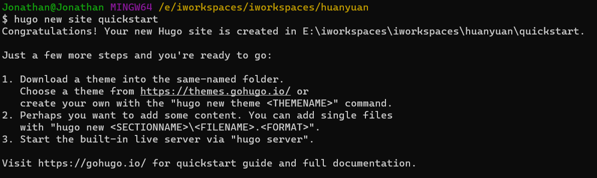
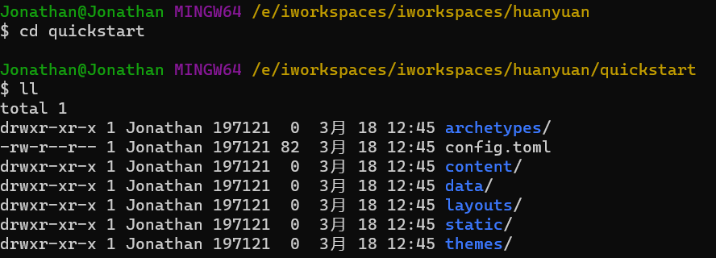
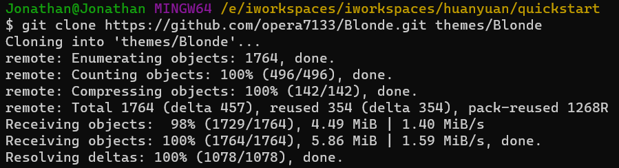
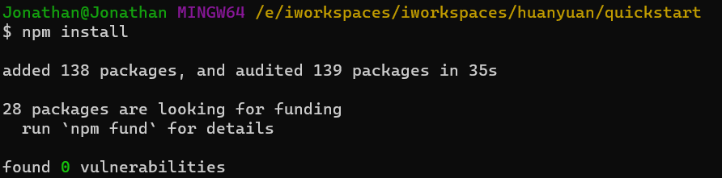
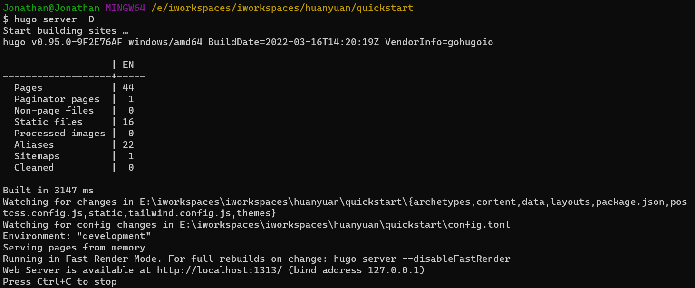
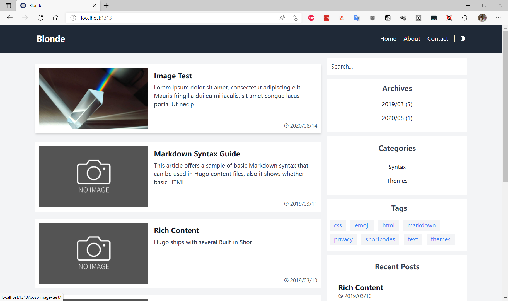

Windows系统Hugo安装
Hugo是一个用Go编写的静态站点生成器，由于具有丰富的主题资源和惊人的生成速度而备受青睐。
Hugo安装
如果你是macOS用户，请使用Homebrew快速安装
brew install hugo
如果你是Windows用户，请使用Chocolatey或者Scoop快速安装，取决于你使用什么包管理.
# chocolatey
choco install hugo -confirm
# scoop
scoop install hugo
如果你是Debian或Ubuntu用户，请使用apt快速安装。
sudo apt-get install hugo
基本上使用单行命令都可以成功安装Hugo。
创建Hugo网站
Hugo创建网站：

进去后目录结构如下：

vscode和插件
vscode安装插件 Hugofy、Hugo Helper、Hugo Language and Syntax Support，然后使用vscode打开刚刚创建Hugo项目。
加入主题
Hugo有很多主题，可以去 官网 查询使用。
我这里使用Blonde。Blonde使用Node.js开发，所以会用到一点Node.js相关知识。
关于Theme的使用有很多种方法，可以网上自行查询使用，我这里为了方便，就直接通过git clone的方式，将主题直接clone到本地。
git clone https://github.com/opera7133/Blonde.git themes/Blonde

然后将themes/Blonde/exampleSite目录下的所有文件拷贝到我们项目根目录下。
修改下content/post/rich-content.md文件，将15行以后的注释或者直接删除(这里的内容由于网络原因访问不到)。
Blonde主题采用Node.js开发，所以需要安装下依赖包。在项目根目录下执行npm install，安装主题相关包。

执行命令hugo server -D启动hugo服务，默认端口1313(需要保证端口可用)。

访问http://localhost:1313。

到这里，一个简单的Hugo博客网站就出来了，至于具体的博客内容编辑，只需要拷贝一份content/post下的任意文章，然后修改里边的内容即可。内容都是Markdown格式的，很容易编辑的。